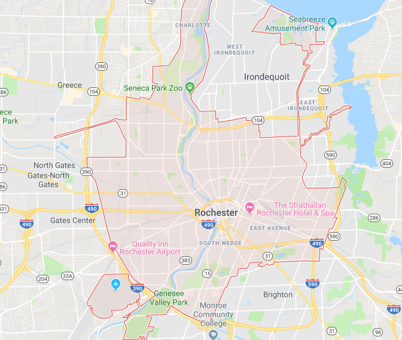

Rochester Food Truck Tracker
Powered by Datto

| Truck | Location |
|---|---|
| Le Petit Poutine | Elm Street |
| Stingray Sushifusion | Elm Street |
| Meat The Press | Elm Street |
| Tuscan Wood Fired Pi | Elm Street |
| Roc City Sammich | Elm Street |
| Neno’s | OFFLINE |